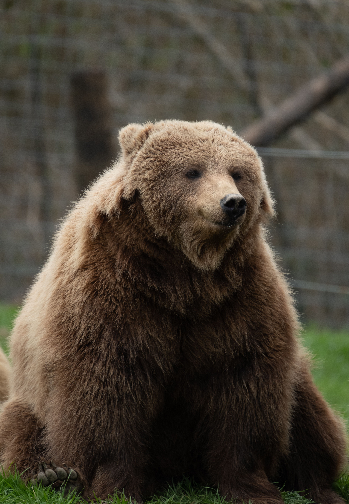
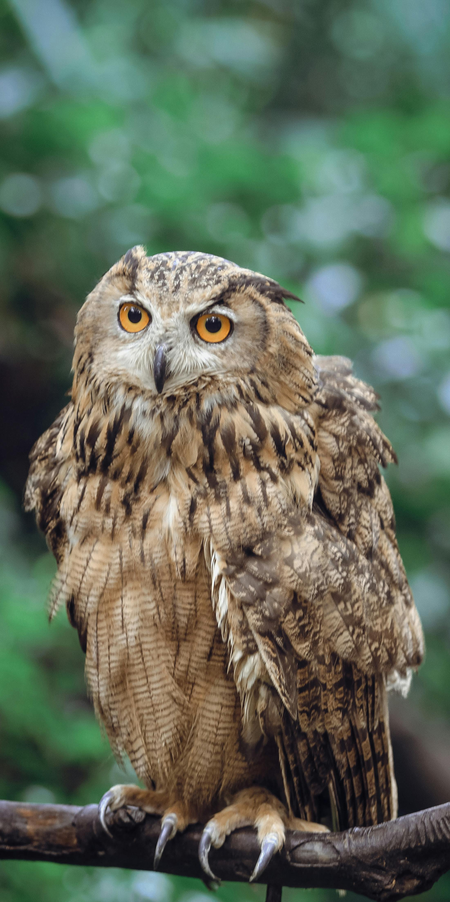

About Koko Café
Who We Are
Welcome to Koko Café! Founded with a passion for exceptional coffee, we are a cozy neighborhood spot dedicated to bringing people together over the perfect brew. Our space is designed to be your second home, whether you're catching up with friends or finding a quiet corner to work.
Our Mission
Our goal is simple: to serve sustainably sourced, specialty coffee alongside fresh, artisanal pastries. We believe that every cup tells a story, and we work closely with local roasters to ensure that every sip you take supports ethical and quality-driven farming.

Meet Our Team
The passionate people behind your daily brew.

Bear
Founder & Head Barista
Bear started Koko Café to share their love for latte art and single-origin beans. Always ready for a coffee chat!

Cat
Pastry Chef
Cat bakes our famous pastries fresh every single morning. Her secret ingredient? A touch of love and lots of butter.

Owl
Barista
Owl is our espresso expert and playlist curator. He knows exactly how to brighten your morning with a smile.